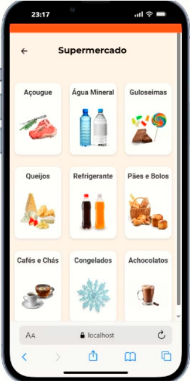

Nossa Missão
Nossa missão principal é oferecer uma ferramenta prática que permite:
- Comparar preços entre estabelecimentos.
- Economizar tempo e dinheiro.
- Tomar decisões de compra mais inteligentes.
Na prática
Os consumidores perdem tempo e dinheiro diariamente.
O Problema:
- Variação extrema de preços entre supermercados.
- Dificuldade em encontrar as melhores ofertas.
- Falta de planejamento gera gastos excessivos.
- Encartes físicos são difíceis de acompanhar.
A Solução
O Pratizen não é apenas uma lista de compras é uma ferramenta de inteligência de consumo. Nossa promessa é comparar preços, economizar tempo e otimizar cada centavo gasto: Simples; Rápido; Econômico.
Funcionalidades Principais
Comparação de Preços
Análise de preços de produtos em diferentes supermercados e identificação das melhores ofertas, garantindo que você pague sempre o menor valor.
Listas Inteligentes
Listas de compras personalizadas com sugestões automáticas de economia e sincronização em tempo real entre todos os seus dispositivos.
Geolocalização Avançada
Localização de lojas próximas a você e rotas otimizadas para os estabelecimentos que oferecem os melhores preços para sua lista.
Encartes Digitais
Acesso a encartes digitais atualizados dos seus supermercados favoritos e notificações de promoções relevantes em primeira mão.
Algumas imagens do App
